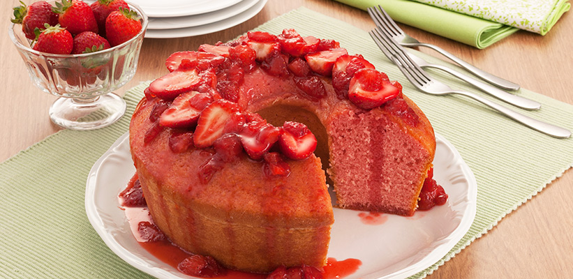

Bolo de morango caseiro

Bolo de morango bem macio com cobertura a seu gosto
Ingredientes
1 xícara(chá) de água
1 xícara (chá) de Nesquick
4 colheres (sopa) de Manteiga
3 ovos
1 e 1/2 xícaras (chá) de açúcar
3 xícaras (chá) de farinha de trigo
1 colher (sopa) de fermento em pó químico
Manteiga e farinha de trigo para untar
10 morangos cortados ao meio para decorar
Cobertura
1 caixa de morangos picados (300g)
1 Xícara (chá) de açúcar
Suco de 1 limão
Modo de Preparo
- No liquidificador bata a água,o nesquick, a manteiga, os ovos e o açúcar até ficar homogêneo.
- Transfira para uma tigela,adicione a farinha e o fermento e misture com uma colher
- Despeje em uma fôrma de buraco no meio de 30 cm de diâmetro untada e enfarinhada
- Leve ao forno médio, preaquecido, por 35 minutos ou até dourar
- Retire e deixe esfriar
Cobertura
- Para a cobertura, em uma panela misture o morango, o açúcar e o suco de limão
- Leve ao fogo baixo e deixe levantar fervura
- Cozinhe por 5 minutos e deixe esfriar
- Desenforme o bolo, cubra com metade da cobertura, arrume os morangos cortados ao meio sobre o bolo e cubra com a cobertura restante. Sirva em seguida
Bom apetite